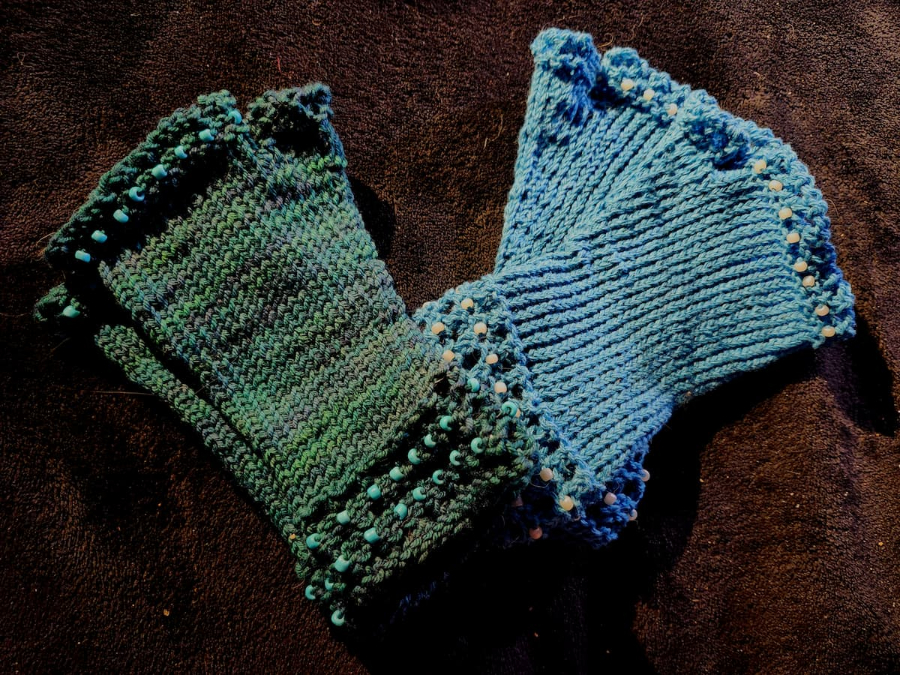

Wildlife-Inspired Functional Art
Each piece is handcrafted using natural fibers, celebrating Alaska's incredible wildlife and landscapes. From the marine wonders of Glacier Bay National Park to the fungi of Southeast Alaska forests, these creations bring a piece of the Last Frontier into your home.
All materials are natural fibers - wool, cotton, and silk - often sourced locally or chosen for their sustainability and quality.
Alaskan Wildlife Potholders
Functional kitchen art featuring creatures from our local ecosystems

Winter Chanterelle
Edible mushroom potholder inspired by the Winter Chanterelles that grow throughout Glacier Bay National Park. These golden mushrooms are a favorite forager's find in Southeast Alaska.
Details: Hand-knit with intricate embroidery, capturing the distinctive funnel shape and gills of this prized edible fungus.

Giant Pacific Octopus
Knit and embroidered octopus potholder featuring Alaska's largest octopus species. The Giant Pacific Octopus is an intelligent, captivating creature of our coastal waters.
Details: Intricate tentacle detailing with suction cup embroidery, created with mathematically precise patterning.

Humpback Whale
Humpback whale potholder inspired by the majestic whales that feed in Glacier Bay's summer waters. These whales migrate thousands of miles to feast in Alaska's rich seas.
Details: Features the distinctive pectoral fins and knobby head of the humpback, with embroidery highlighting baleen plates.

Fresh-Knit Flatties
Halibut hot pad collection in varying natural colors. Pacific halibut are a prized Alaska fishery, and these functional pieces celebrate their unique flat shape.
Details: Award-winning design featuring three color variations. Each halibut shows both eyes on one side, accurate to the real fish's adaptation.
🏆 Southeast Alaska State Fair - Best in Show Textiles
The Making Process
Each piece begins with mathematical patterning, followed by careful hand-knitting and finishing with detailed embroidery.

Action shot showing the knitting process for a glove. Each stitch is placed intentionally, and beads are added individually during the knitting process for precise placement and durability.
Wearable Alaskan Art
Functional pieces for staying warm in style

Beaded Fingerless Gloves
Merino wool with glass seed beads - perfect for chilly Fairbanks days while maintaining dexterity. Each bead is placed individually during the knitting process.
Details: Made with luxurious merino wool for warmth without bulk. The glass seed beads add sparkle and are securely integrated into the knit structure.
Function: Ideal for artists, knitters, or anyone who needs hand warmth while working in cool temperatures.